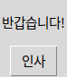

Tk() → 위젯 → pack → command → mainloop()예제를 보지 않고 이 순서로 창을 만들 수 있으면 2단원 본편을 닫을 수 있습니다.
 인공지능 파이썬 실무
인공지능 파이썬 실무Ⅱ. GUI 프로그래밍 · 주제 09 / 11
어떤 위젯을 왜 배치했고, 어떤 이벤트에 반응하는지 설명하세요.
대단원 Ⅱ. GUI 프로그래밍 교과서 40–59쪽
마무리·종합 평가 연계
이 웹 주제의 연계 범위: 56–59쪽
웹 학습 주제 09 / 11
어떤 위젯을 왜 배치했고, 어떤 이벤트에 반응하는지 설명하세요.
| 점검 | 질문 |
|---|---|
| 개념 | 왜 이 도구를 선택했나요? |
| 코드 | 입력과 출력은 무엇인가요? |
| 검증 | 조건을 바꾸어도 동작하나요? |
BEFORE THE CODE
새 이름·속성이 코드에 나오기 전에 짧게 봅니다. 외우기보다 역할을 먼저 구별하세요.
Tk() → 위젯 → pack → command → mainloop()예제를 보지 않고 이 순서로 창을 만들 수 있으면 2단원 본편을 닫을 수 있습니다.
창을 만드는 출발점입니다. 종합 평가에서 묻는 바로 그 객체입니다.
HISTORY / VIDEO
2단원은 접점(CLI/GUI) → 툴킷 → 위젯·배치·이벤트 → 메모장 순으로 쌓입니다. 창을 띄우는 Tk 객체와, 나중에 호출할 콜백만 구별해도 종합 평가의 뼈대는 됩니다.
RESULT PREVIEW

중단원 정리: Tk 객체가 창을 만들고, 위젯이 입력·표시 기능을 맡고, 배치 관리자가 위치를 정하며, 이벤트 함수가 사용자 행동에 반응합니다. mainloop가 이벤트를 기다립니다.
57쪽 확인학습의 IDLE 코드에서 컨테이너는 Frame, 클릭 요소는 Button, 이 요소들의 통칭은 위젯입니다. 종합 평가에서는 Tk 객체, UI 편의성, UI 정의, GUI 사례, 버튼 콜백, 배치 방식, pack 호출을 모두 확인합니다.
56–59쪽을 이 페이지에서 다시 닫습니다. 처음부터 만들기 예제로 Tk 객체·pack·command·mainloop를 타이핑하고, 57쪽 IDLE 코드에서 컨테이너(Frame)·클릭 요소(Button)·통칭(위젯)을 찾으세요. 58쪽 4번은 보기 내용이 GUI 사례이므로 인터페이스 유형을 고르는 문제로 읽습니다.
PRACTICE / RETRY / UNDERSTAND
설명·힌트·정답과 함께 스스로 채점합니다.